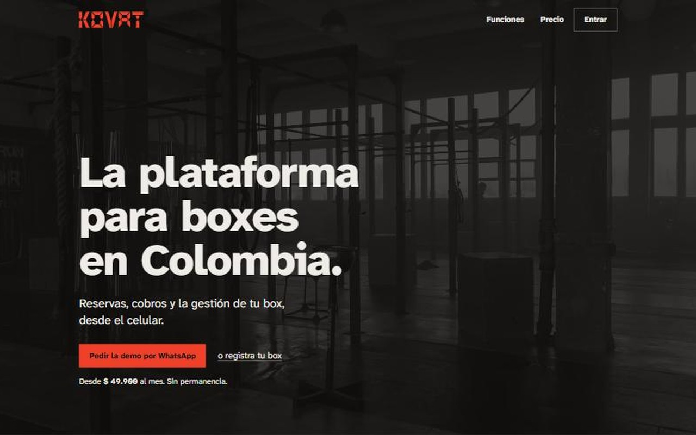
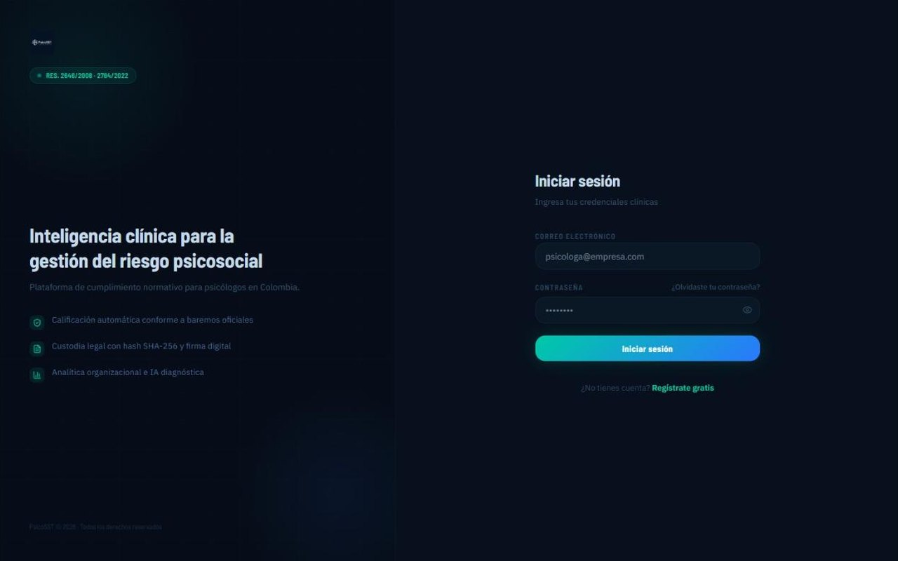
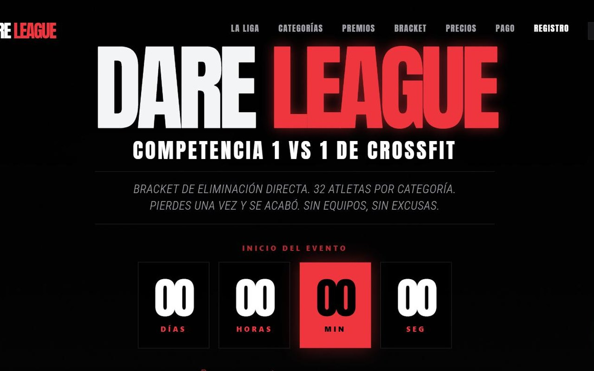
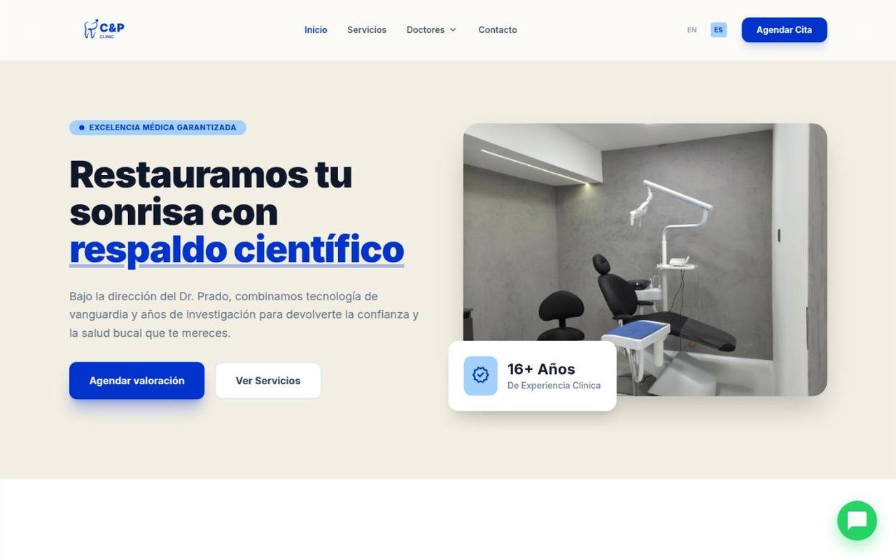

Proyectos

Ricuras Fegaf
Se acabó el papel entre la mesa y la cocina. Cada orden llega al instante, completa, y al final del día las cuentas ya están hechas.
Ver caso de estudio
Kovat
Le devuelve al dueño del box las horas que pierde persiguiendo pagos por WhatsApp, y le avisa qué atleta está a punto de irse antes de que se vaya.
Ver caso de estudio
PsicoSST
Un trabajo que tomaba días de calificar a mano ahora sale en minutos, y con los datos de la gente bien protegidos.
Ver caso de estudio
Dare League
Un torneo que se inscribe, se cobra y se administra solo. La organización dejó de perseguir pagos por WhatsApp.
Ver caso de estudio
C&P Smile
Tres negocios, tres sitios, una sola marca. La clínica atrae pacientes de aquí y de afuera, el laboratorio recibe trabajos y la academia vende sus cursos.
Ver caso de estudioProyectos de equipo en la universidad: DoURemember (pruebas E2E), SIGEP 2 (Spring Boot), MySQL + ProxySQL, microservicios en Flask.